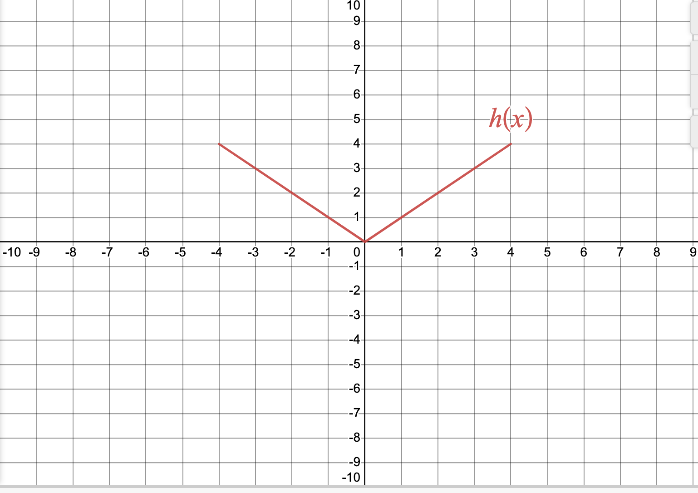

When using functions as models, how do we ensure our models are meaningful?
When computing with functions that are being used as models, how do we ensure our computations are meaningful?
How can we visualize unit conversions graphically?
Suppose you were told that \(h(t) = \dfrac{10t +1}{t+2}\) represented the height \(h\) of a tree after time \(t\text{,}\) and were asked to use it to estimate the height of the tree after \(5\) years. Do you plug in \(5\) years for \(t\text{,}\) or \(60\) months? If you compute the value \(8\) for \(h\text{,}\) is that \(8\) meters, feet, or something else? In order to make functions usable as models, we must understand how variables are being measured, and how those variables are being combined to produce something meaningful.
Warm-Up1.3.1.
Separate the following words into groups, and explain why you separated them the way that you did.
meter, liter, second, cubic feet, mile, year
Subsection1.3.1Units and Dimensions
In Warm-Up 1.3.1, there are multiple ways you may have separated the words into different groups. One way would be to group them based on what each is measuring, called a dimension. Within a single group (dimension), each word describes how we might measure that dimension, called a unit.
Example1.3.1.Units and Dimensions.
Volume is a dimension that may be measured in one of many different units, including \(\text{m}^3\text{,}\)\(\text{ft}^3\text{,}\) gallons, and liters.
Mass is a dimension that may be measured in one of many different units, including grams, kilograms, and milligrams.
Subsection1.3.2Conversion Factors and Fundamental Relations
There are situations when it is necessary to change the units in which a quantity is being measured in order to make a meaningful computation. To convert between different units, we use conversion factors, which are ratios that express the same quantity of a dimension in two different units. For example, the ratio \(\dfrac{1000 \text{g}}{1 \text{kg}}\) is a conversion factor because \(1000 \text{g} = 1 \text{kg}\text{.}\)
We can multiply numerical expressions by conversion factors without changing the quantity being represented since the numerator and denominator are equal, it is the same as multiplying by \(1\text{.}\) If we use conversion factors correctly, we can also get unwanted units to cancel and convert to new units.
Example1.3.2.Conversion Factors.
Let \(p(t) = 3t\) be the mass of a bacterial colony after \(t\) minutes measured in grams, and \(q(t)= t+2\) be the mass of a separate bacterial colony after \(t\) minutes measured in kilograms. If we wanted to find the total mass of all bacterial colonies, we cannot just add the functions as they are written, since mass is being measured in different units for each colony. We could either convert \(p(t)\) to units of kilograms, or \(q(t)\) to units of grams. For this example, we will do the latter:
Notice that we had the choice to write the conversion factor as \(\dfrac{1000 \text{g}}{1 \text{kg}}\) or \(\dfrac{1 \text{kg}}{1000 \text{g}}\text{,}\) and we made our choice so that the unwanted unit (kilograms) would cancel.
Now that \(p(t)\) and \(q(t)\) are both measured in grams, we may add them together to get the total mass:
Let \(V(t)=2t\) measure the volume (in liters) of a balloon after \(t\) seconds, and \(m(V) = 6+V\) measure the mass (in grams) of the balloon when the volume is \(V\) milliliters. Use conversion factors to determine a meaningful expression for the function \(m(V(t))\text{.}\) What does this function represent?
Though different dimensions measure different things, it is possible that two different dimensions are related. For example, the radius of a circle is related to its area and the volume of a glass of water is related to its mass. The precise relationship between multiple dimensions is know as a fundamental relation, and can help us compute useful quantities. It is good practice to pay attention to units being used within fundamental relations to make sure we understand the units of the quantity being computed, and avoid common errors. Below we list some commonly used fundamental relations:
Fundamental Relations.
\(A = \pi r^2 \) (area \(A\) of a circle from the radius \(r\))
\(V = \dfrac{4}{3} \pi r^3 \) (volume \(V\) of a sphere from the radius \(r\))
\(m = \rho A \) (mass \(m\) from the density \(\rho\) and area \(A\))
\(m = \rho V \) (mass \(m\) from the density \(\rho\) and volume \(V\))
A spherical liquid droplet has density \(13 \dfrac{\text{g}}{\text{cm}^3} \text{.}\) If the radius of the droplet is \(2.3 \text{mm}\text{,}\) what is its mass?
Subsection1.3.3Function Transformations
If we have a function \(b(t)\) which measures a population in millions after \(t\) hours, how would converting the population unit to thousands change the graph of \(b(t)\text{?}\) How would converting the time unit to days change the graph of \(b(t)\text{?}\) Take a few moments with the interactive below to explore before viewing the answers.
In both unit conversions above, the resulting graphs are function transformations of the original graph \(b(t)\text{.}\) Function transformations are useful outside of unit conversions in recognizing the general shape and other properties of graphs of complicated functions, so we summarize the different types of transformations in the table below:
Table1.3.4.Function transformations of a function \(f(x)\)
Vertical
Horizontal
Shift
\(f(x) + c\)
\(f(x + c)\)
Scale
\(cf(x)\)
\(f(cx)\)
Reflection
\(-f(x)\)
\(f(-x )\)
Notice that vertical changes to graphs result from adding or multiplying outside of the function notation (since this changes output values, or \(y\) values, of functions), and that horizontal changes to graphs result from adding or multiplying inside of the function notation (since this changes input values, or \(x\) values, of functions).
Example1.3.5.Unit Conversions and Transformtions.
A function \(C(t)\) gives the temperature in Celsius of an object after \(t\) seconds.
The temperature of the object in Kelvin would be given by \(K(t) = C(t) + 273\text{,}\) which graphically is a vertical shift up \(273\) units:
The temperature of the object in Fahrenheit would be given by \(F(t) = \dfrac{9}{5}C(t) + 32\text{,}\) which graphically is a vertical scale by a factor of \(\dfrac{9}{5}\) followed by a vertical shift up \(32\) units:
Subsection1.3.4Summary
Question1.3.6.
When using functions as models, how do we ensure our models are meaningful?
Answer.
To ensure our models are meaningful, we must be sure we are using appropriate fundamental relations that describe the quantities we are measuring, and appropriate units to measure those variable quantities.
Question1.3.7.
When computing with functions that are being used as models, how do we ensure our computations are meaningful?
Answer.
We can use the units of variable quantities when making computations to ensure that units combine and cancel appropriately to give a meaningful output.
Question1.3.8.
How can we visualize unit conversions graphically?
Answer.
Unit conversions result in a transformation of the graph of the function being used. Function transformations can be useful in recognizing the general shape and other properties of graphs of complicated functions.
Exercises1.3.5Exercises
1.
Explain the error in the following argument:
“The area of a square of length \(10\) cm is \(100\text{.}\) If we instead measure the square in meters (so the length is \(0.1\) m), the area of the same square is \(0.01\text{.}\) Since in one case the area gets big and in the other case the area gets small, this means the actual area of a square can change depending on the units used to measure the length.”
2.
The conversion from degrees Celsius to degrees Fahrenheit is given by \(F = \dfrac{9}{5}C + 32\text{,}\) where \(F\) is measured in degrees Fahrenheit and \(C\) is measured in degrees Celsius.
What are the units of \(32\text{?}\)
What are the units of \(\dfrac{9}{5}\text{?}\)
3.
The graph of a function \(h(x)\) is given below:

On the same coordinate system, sketch the graph of each transformation of \(h(x)\text{.}\)